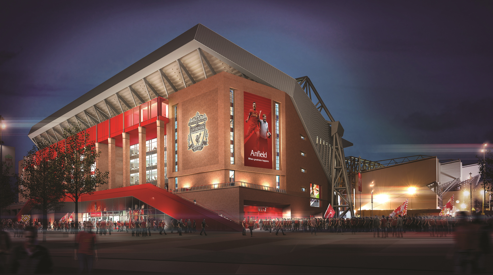

Liverpool Football Club is a professional English soccer team based in Merseyside, England. Founded in 1892, the club competes in the Premier League and hosts matches at the historic 61,276-seat Anfield stadium. Known globally as "The Reds," they are historically among the most successful teams in English and European history.


Anfield Stadium is the historic home of Liverpool FC, located in Liverpool, England. Built in 1884, it has become one of the most famous football stadiums in the world, known for its deep history and passionate atmosphere with a capacity of over 60,000 people.
- 60000
- Liverpool, England